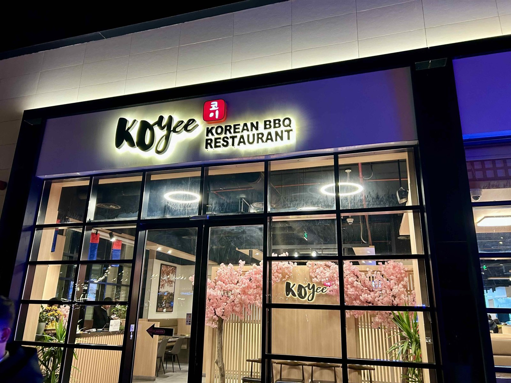
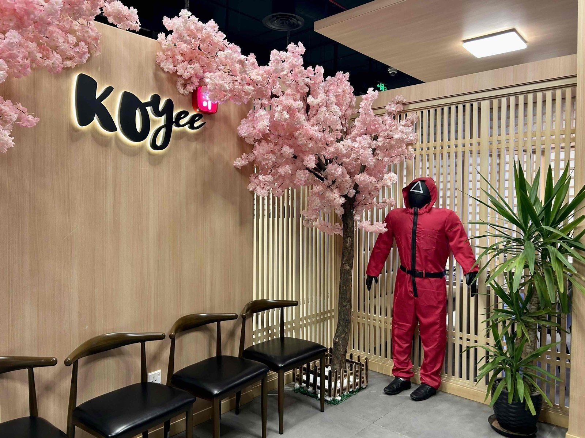
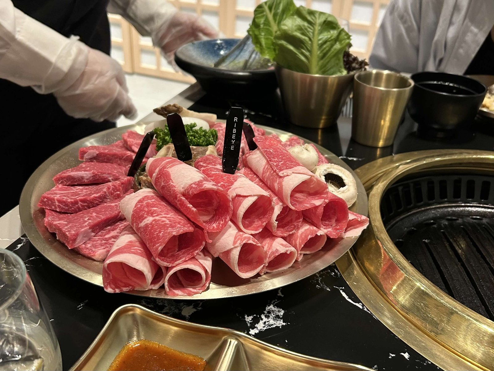
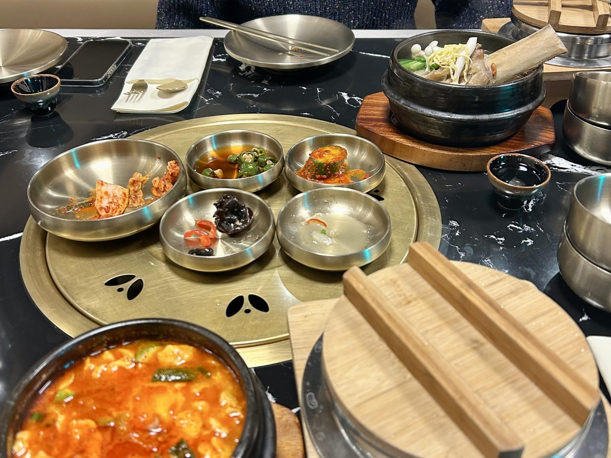
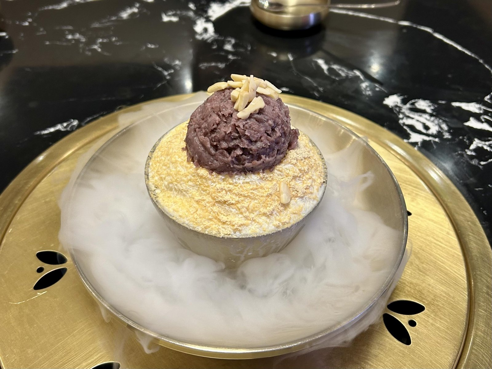
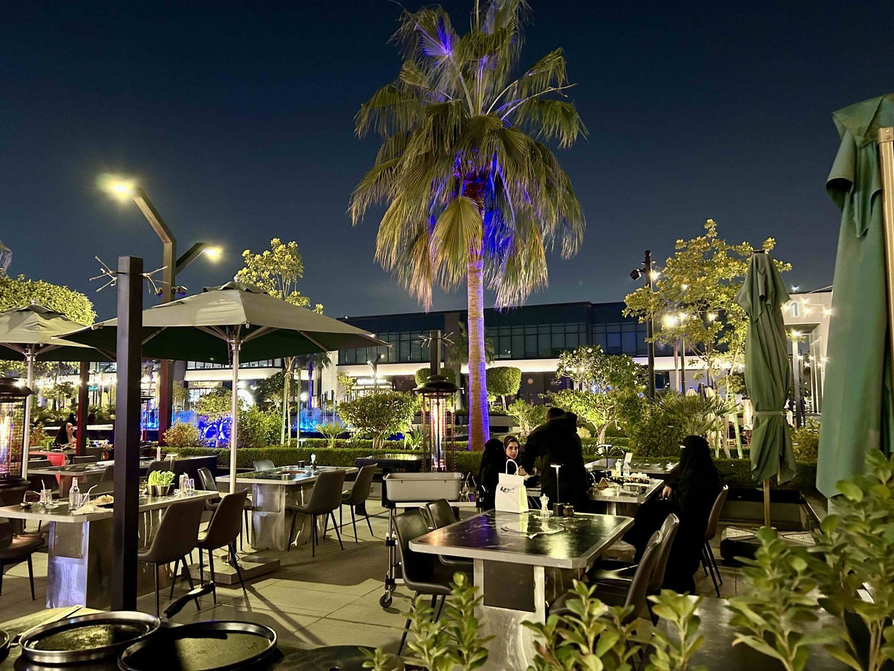
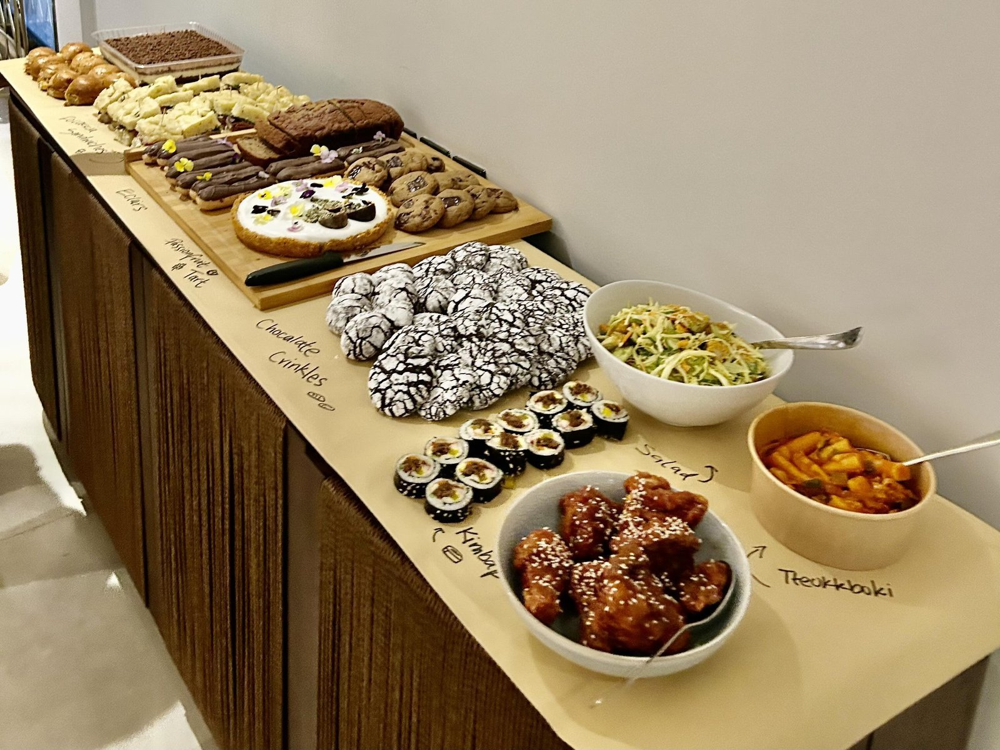
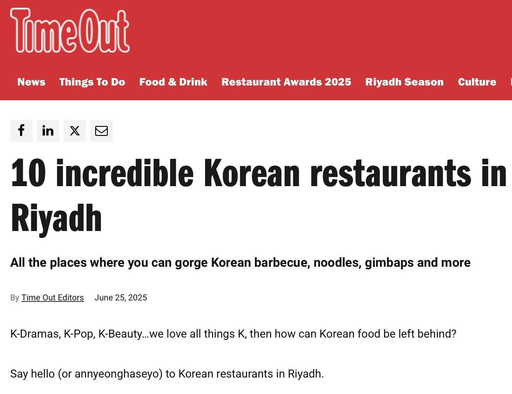

최근 사우디아라비아에서는 한국 대중문화 확산과 함께 한국 음식에 대한 관심이 높아지고 있다. 이에 따라 한국 음식점도 점차 늘어나면서, 한국 바비큐와 치킨을 중심으로 떡볶이, 김밥, 잡채 등 다양한 한식 메뉴를 사우디 현지인들이 찾는 모습이 자주 관찰된다.
리야드·알코바에 문 연 '코이', 정통 한식으로 승부
리야드에 위치한 코이(Koyee)는 올해 2월 문을 열었으며, 알코바 지점은 12월 3일 정식 오픈했다. 알코바 지점은 리야드점과 달리 비교적 간편한 식사 형태로 메뉴를 선보이고 있다. 리야드점의 경우 모든 테이블에서 바비큐가 가능하도록 구성돼 있으며, 한국적인 인테리어를 바탕으로 고급스럽고 깔끔한 분위기를 갖추고 있다.

▲ 코이(Koyee) 리야드점 외관 — 출처: 통신원 촬영

▲ 코이(Koyee) 리야드점 인테리어 — 출처: 통신원 촬영
통신원 역시 코이 리야드점을 즐겨 찾고 있으며, 리야드에서는 좀처럼 찾기 어려운 정통 한식의 맛을 경험할 수 있었다. 정식 메뉴에는 돌솥밥이 함께 제공되며, 식사 후 뜨거운 물을 부어 누룽지까지 즐길 수 있다. 이러한 구성은 한식을 자주 접하지 않은 외국인들에게도 인상적인 경험이 될 것으로 보인다. 디저트로는 다양한 맛의 빙수가 준비돼 있으며, 드라이아이스를 활용한 데커레이션도 눈길을 끈다.


▲ 코이에서 제공되는 바비큐 및 한식 정식 — 출처: 통신원 촬영

▲ 디저트로 즐기는 팥빙수 — 출처: 통신원 촬영
최근 방문 당시 통신원은 코이 리야드점의 배용휘 총괄 매니저와 간단한 인터뷰를 진행했다. 배 매니저는 리야드에 제대로 된 한식 음식점이 많지 않다는 점에서 출발해, 진짜 한국 음식을 현지인들에게 선보이고자 하는 포부와 사명으로 음식점을 열었다고 전했다. 일부 현지 한국 음식점들이 퓨전 메뉴를 선택하는 것과 달리, 코이는 정통 한식으로 승부하기로 결정했으며 레시피를 바꾸지 않고 한국 현지에서 판매되는 음식과 동일한 맛을 구현하고자 했다고 설명했다.
현지인들의 반응에 대해 묻는 질문에 배 매니저는 사우디인들에게 큰 감사의 마음을 전했다. 사우디 현지인들의 한국 음식에 대한 큰 애정과 뜨거운 반응에 감동을 받을 때도 많다고 설명했다. 한국을 여행한 경험이 있는 사우디인들 중에는 다른 한국 음식점에서 한국에서 먹었던 음식과 다른 맛에 아쉬움을 느낀 경우도 있었다고 한다. 이후 코이에서 한국 음식을 맛보고 한국 여행 당시 경험했던 한식이 떠올랐다며 만족감을 표현하는 반응이 이어지고 있다고 전했다. 또한 한국 드라마와 영화를 통해 접한 한식을 직접 경험하고자 찾아오는 손님들도 있다고 덧붙였다.

▲ 야외 좌석 공간을 갖춘 코이 리야드점 전경 — 출처: 통신원 촬영
한국 음식점 확산과 현지 매체가 전한 한국 음식에 대한 관심
코이 외에도 라멘(Ramen)과 같이 한식과 일식을 함께 선보이는 레스토랑이 지난해 오픈했으며, 통신원 역시 여러 차례 방문한 바 있다. 또한 한끼(Hankki)와 같은 한식 스트리트 푸드(Street Food) 전문 음식점도 배달 애플리케이션을 통해 이용할 수 있어 접근성이 높아졌다. 통신원은 외국인 동료들과 함께하는 파티 자리에서 치킨, 떡볶이, 김밥 등을 해당 음식점에서 배달 주문해 함께 나눠 먹은 경험이 있다. 이 모임은 참석자들이 각자 음식을 준비해 가져오는 형태로 진행되었는데, 특히 동료들이 양념치킨에 큰 호응을 보였다. 이후에는 동료들이 직접 가족들과 함께 해당 음식점을 통해 배달로 주문해 먹기도 했다며 높은 만족감을 전했다.

▲ 외국인 동료들과 함께 나눈 파티 음식들 가운데 한국 음식 — 출처: 통신원 촬영
또한 현지 라이프스타일 매체 《타임 아웃 리야드(Time Out Riyadh)》는 리야드의 한국 음식점 10곳을 소개하며, 한국 드라마와 케이팝의 인기에 힘입어 한국 음식에 대한 관심과 소비가 이어지고 있다고 조명했다.

▲ 리야드의 한국 음식점을 다룬 현지 매체 기사 — 출처: 타임 아웃 리야드(Time Out Riyadh)
이처럼 최근 한국 음식점이 꾸준히 오픈하면서 해외 교민들과 한국 문화 팬들에게 반가운 소식이 되고 있다. 아울러 한국 음식이 익숙하지 않은 현지인들에게도 한식을 접할 수 있는 기회가 늘어나고 있다. 이러한 변화 속에서 사우디아라비아 내 한국 음식의 확산은 긍정적으로 전망된다.
사진 출처 및 참고자료
통신원 촬영
《타임 아웃 리야드(Time Out Riyadh)》(2025. 06. 25). 10 incredible Korean restaurants in Riyadh, timeoutriyadh.com